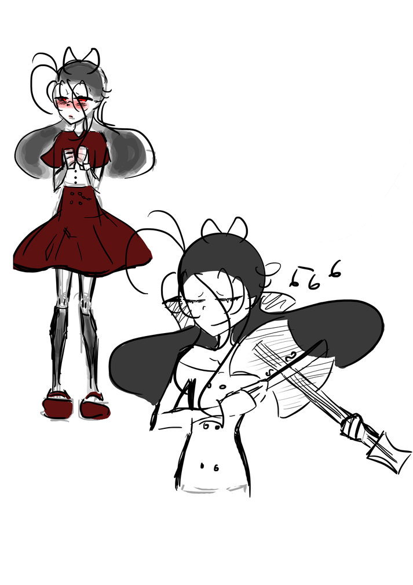

Here are some more quick sketches… they are very quick sketches… sorry…
I just felt like I should try and post something and this was the best I had because I’ve been busy working on typing out all of volume 1’s text ( which I just finished yesterday) and I have also been working on the script for volumes 6 and 7! p. s – I have a convention coming up so I have also being making sure that I have all the right equipment. (because…. at the last few conventions I’ve been to I’ve had to use 2 fleecy blankets as a table cloth and it looked just a little bit odd…)
Okay, now, I’m going to blabber a little bit more now…
The red outfit that the character in my sketch is wearing is actually an outfit that I want to buy yet have many reasons for not buying…
number 1 – It is ridiculously expensive
number 2 – It is from so far away it would take at least a month to arrive!
number 3 – It’s ridiculously expensive!
number 4 – I’m not sure if it would fit me.
number 5 – It’s ridiculously expensive!!
number 6 – IT’S RIDICULOUSLY EXPENSIVE!!!
So there you go, my reasons for not buying that ‘outfit thingy’ *sarcastic* I’m sure that was very interesting to read about!
adios!
Amy
p.s- THE CHARACTER IS FROM MY COMIC MYSTERY CLUB